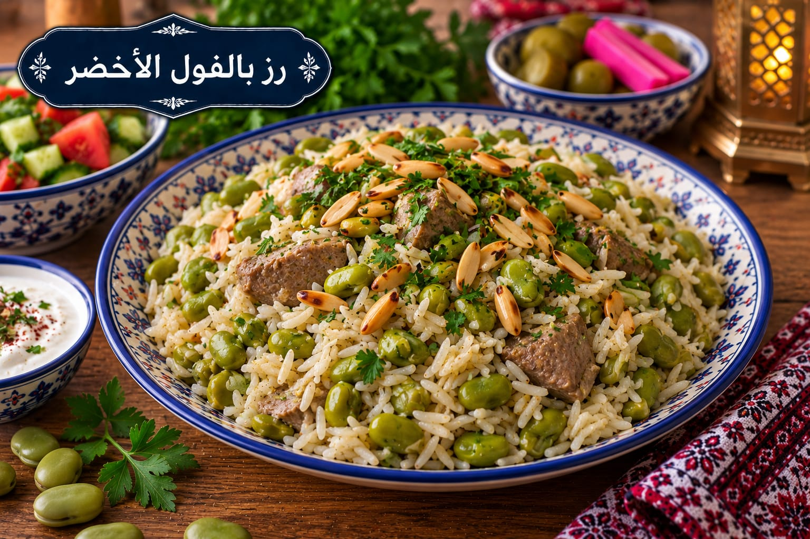

رز بالفول الأخضر
أرز بالفول واللحم

مقادير رز بالفول الأخضر
- 3 أكواب أرز بسمتي
- 2 كوب فول أخضر
- 300 غ لحم مفروم أو مكعبات صغيرة
- 1 بصلة
- 4½ أكواب مرق ساخن
- 1½ ملعقة صغيرة ملح
- 1 ملعقة صغيرة بهار مشكل
- ½ ملعقة صغيرة فلفل أسود
- 2 ملعقة كبيرة سمنة
طريقة عمل رز بالفول الأخضر
- اغسلي الأرز وانقعيه 20 دقيقة ثم صفيه.
- حمري اللحم والبصل بالسمنة ثم أضيفي الفول والبهارات وقلبي 5 دقائق.
- أضيفي الأرز والمرق الساخن والملح. اتركيه يغلي مكشوفًا حتى ينخفض السائل.
- غطي القدر وخففي النار 18–20 دقيقة ثم أطفئي النار وأريحيه 10 دقائق قبل التقليب.